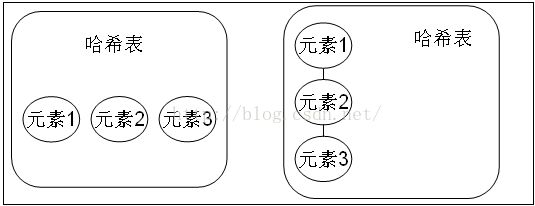
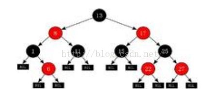

本人免费整理了Java高级资料，涵盖了Java、Redis、MongoDB、MySQL、Zookeeper、Spring Cloud、Dubbo高并发分布式等教程，一共30G，需要自己领取。
传送门：https://mp.weixin.qq.com/s/JzddfH-7yNudmkjT0IRL8Q
Set:注重独一无二的性质,该体系集合可以知道某物是否已近存在于集合中,不会存储重复的元素
用于存储无序(存入和取出的顺序不一定相同)元素，值不能重复。
对象的相等性
引用到堆上同一个对象的两个引用是相等的。如果对两个引用调用hashCode方法，会得到相同的结果，如果对象所属的类没有覆盖Object的hashCode方法的话，hashCode会返回每个对象特有的序号（java是依据对象的内存地址计算出的此序号），所以两个不同的对象的hashCode值是不可能相等的。
如果想要让两个不同的Person对象视为相等的，就必须覆盖Object继下来的hashCode方法和equals方法，因为Object hashCode方法返回的是该对象的内存地址，所以必须重写hashCode方法，才能保证两个不同的对象具有相同的hashCode，同时也需要两个不同对象比较equals方法会返回true
该集合中没有特有的方法，直接继承自Collection。
---| Itreable 接口 实现该接口可以使用增强for循环
---| Collection 描述所有集合共性的接口
---| List接口 可以有重复元素的集合
---| ArrayList
---| LinkedList
---| Set接口 不可以有重复元素的集合
案例：set集合添加元素并使用迭代器迭代元素。
public class Demo4 {
public static void main(String[] args) {
//Set 集合存和取的顺序不一致。
Set hs = new HashSet();
hs.add("世界军事");
hs.add("兵器知识");
hs.add("舰船知识");
hs.add("汉和防务");
System.out.println(hs);
// [舰船知识, 世界军事, 兵器知识, 汉和防务]
Iterator it = hs.iterator();
while (it.hasNext()) {
System.out.println(it.next());
}
}
}
---| Itreable 接口 实现该接口可以使用增强for循环
---| Collection 描述所有集合共性的接口
---| List接口 可以有重复元素的集合
---| ArrayList
---| LinkedList
---| Set接口 不可以有重复元素的集合
---| HashSet 线程不安全，存取速度快。底层是以哈希表实现的。
HashSet哈希表边存放的是哈希值。HashSet存储元素的顺序并不是按照存入时的顺序（和List显然不同） 是按照哈希值来存的所以取数据也是按照哈希值取得。
HashSet不存入重复元素的规则.使用hashcode和equals
由于Set集合是不能存入重复元素的集合。那么HashSet也是具备这一特性的。HashSet如何检查重复？HashSet会通过元素的hashcode（）和equals方法进行判断元素师否重复。
当你试图把对象加入HashSet时，HashSet会使用对象的hashCode来判断对象加入的位置。同时也会与其他已经加入的对象的hashCode进行比较，如果没有相等的hashCode，HashSet就会假设对象没有重复出现。
简单一句话，如果对象的hashCode值是不同的，那么HashSet会认为对象是不可能相等的。
因此我们自定义类的时候需要重写hashCode，来确保对象具有相同的hashCode值。
如果元素(对象)的hashCode值相同,是不是就无法存入HashSet中了? 当然不是,会继续使用equals 进行比较.如果 equals为true 那么HashSet认为新加入的对象重复了,所以加入失败。如果equals 为false那么HashSet 认为新加入的对象没有重复.新元素可以存入.
元素的哈希值是通过元素的hashcode方法 来获取的, HashSet首先判断两个元素的哈希值，如果哈希值一样，接着会比较equals方法 如果 equls结果为true ，HashSet就视为同一个元素。如果equals 为false就不是同一个元素。
哈希值相同equals为false的元素是怎么存储呢,就是在同样的哈希值下顺延（可以认为哈希值相同的元素放在一个哈希桶中）。也就是哈希一样的存一列。

图1：hashCode值不相同的情况
图2：hashCode值相同，但equals不相同的情况。
HashSet：通过hashCode值来确定元素在内存中的位置。一个hashCode位置上可以存放多个元素。
当hashcode() 值相同equals() 返回为true 时,hashset 集合认为这两个元素是相同的元素.只存储一个（重复元素无法放入）。调用原理:先判断hashcode 方法的值,如果相同才会去判断equals 如果不相同,是不会调用equals方法的。
HashSet到底是如何判断两个元素重复。
通过hashCode方法和equals方法来保证元素的唯一性，add()返回的是boolean类型
判断两个元素是否相同，先要判断元素的hashCode值是否一致，只有在该值一致的情况下，才会判断equals方法，如果存储在HashSet中的两个对象hashCode方法的值相同equals方法返回的结果是true，那么HashSet认为这两个元素是相同元素，只存储一个（重复元素无法存入）。
注意：HashSet集合在判断元素是否相同先判断hashCode方法，如果相同才会判断equals。如果不相同，是不会调用equals方法的。
HashSet 和ArrayList集合都有判断元素是否相同的方法，
boolean contains(Object o)
HashSet使用hashCode和equals方法，ArrayList使用了equals方法
使用HashSet存储字符串，并尝试添加重复字符串
回顾String类的equals()、hashCode()两个方法。
public class Demo4 {
public static void main(String[] args) {
// Set 集合存和取的顺序不一致。
Set hs = new HashSet();
hs.add("世界军事");
hs.add("兵器知识");
hs.add("舰船知识");
hs.add("汉和防务");
// 返回此 set 中的元素的数量
System.out.println(hs.size()); // 4
// 如果此 set 尚未包含指定元素，则返回 true
boolean add = hs.add("世界军事"); // false
System.out.println(add);
// 返回此 set 中的元素的数量
System.out.println(hs.size());// 4
Iterator it = hs.iterator();
while (it.hasNext()) {
System.out.println(it.next());
}
}
}
使用HashSet存储自定义对象，并尝试添加重复对象（对象的重复的判定）
public class Demo4 {
public static void main(String[] args) {
HashSet hs = new HashSet();
hs.add(new Person("jack", 20));
hs.add(new Person("rose", 20));
hs.add(new Person("hmm", 20));
hs.add(new Person("lilei", 20));
hs.add(new Person("jack", 20));
Iterator it = hs.iterator();
while (it.hasNext()) {
Object next = it.next();
System.out.println(next);
}
}
}
class Person {
private String name;
private int age;
Person() {
}
public Person(String name, int age) {
this.name = name;
this.age = age;
}
public String getName() {
return name;
}
public void setName(String name) {
this.name = name;
}
public int getAge() {
return age;
}
public void setAge(int age) {
this.age = age;
}
@Override
public int hashCode() {
System.out.println("hashCode:" + this.name);
return this.name.hashCode() + age * 37;
}
@Override
public boolean equals(Object obj) {
System.out.println(this + "---equals---" + obj);
if (obj instanceof Person) {
Person p = (Person) obj;
return this.name.equals(p.name) && this.age == p.age;
} else {
return false;
}
}
@Override
public String toString() {
return "Person@name:" + this.name + " age:" + this.age;
}
}
问题：现在有一批数据，要求不能重复存储元素，而且要排序。ArrayList 、 LinkedList不能去除重复数据。HashSet可以去除重复，但是是无序。
所以这时候就要使用TreeSet了
案例：使用TreeSet集合存储字符串元素，并遍历
public class Demo5 {
public static void main(String[] args) {
TreeSet ts = new TreeSet();
ts.add("ccc");
ts.add("aaa");
ts.add("ddd");
ts.add("bbb");
System.out.println(ts); // [aaa, bbb, ccc, ddd]
}
}
---| Itreable 接口 实现该接口可以使用增强for循环
---| Collection 描述所有集合共性的接口
---| List接口 有序，可以重复，有角标的集合
---| ArrayList
---| LinkedList
---| Set接口 无序，不可以重复的集合
---| HashSet 线程不安全，存取速度快。底层是以hash表实现的。
---| TreeSet 红-黑树的数据结构，默认对元素进行自然排序（String）。
如果在比较的时候两个对象返回值为0，那么元素重复。红-黑树
红黑树是一种特定类型的二叉树

红黑树算法的规则: 左小右大。
既然TreeSet可以自然排序,那么TreeSet必定是有排序规则的。
1:让存入的元素自定义比较规则。
2:给TreeSet指定排序规则。
方式一：元素自身具备比较性
元素自身具备比较性，需要元素实现Comparable接口，重写compareTo方法，也就是让元素自身具备比较性，这种方式叫做元素的自然排序也叫做默认排序。
方式二：容器具备比较性
当元素自身不具备比较性，或者自身具备的比较性不是所需要的。那么此时可以让容器自身具备。需要定义一个类实现接口Comparator，重写compare方法，并将该接口的子类实例对象作为参数传递给TreeMap集合的构造方法。
注意：当Comparable比较方式和Comparator比较方式同时存在时，以Comparator的比较方式为主；
注意：在重写compareTo或者compare方法时，必须要明确比较的主要条件相等时要比较次要条件。（假设姓名和年龄一直的人为相同的人，如果想要对人按照年龄的大小来排序，如果年龄相同的人，需要如何处理？不能直接return 0，因为可能姓名不同（年龄相同姓名不同的人是不同的人）。此时就需要进行次要条件判断（需要判断姓名），只有姓名和年龄同时相等的才可以返回0.）
通过return 0来判断唯一性。
问题:为什么使用TreeSet存入字符串,字符串默认输出是按升序排列的?因为字符串实现了一个接口,叫做Comparable 接口.字符串重写了该接口的compareTo 方法,所以String对象具备了比较性.那么同样道理,我的自定义元素(例如Person类,Book类)想要存入TreeSet集合,就需要实现该接口,也就是要让自定义对象具备比较性.
存入TreeSet集合中的元素要具备比较性.
比较性要实现Comparable接口，重写该接口的compareTo方法
TreeSet属于Set集合，该集合的元素是不能重复的，TreeSet如何保证元素的唯一性
通过compareTo或者compare方法中的来保证元素的唯一性。
添加的元素必须要实现Comparable接口。当compareTo()函数返回值为0时，说明两个对象相等，此时该对象不会添加进来。
比较器接口
----| Comparable
compareTo(Object o) 元素自身具备比较性
----| Comparator
compare( Object o1, Object o2 ) 给容器传入比较器
TreeSet集合排序的两种方式：
一，让元素自身具备比较性。
也就是元素需要实现Comparable接口，覆盖compareTo 方法。
这种方式也作为元素的自然排序，也可称为默认排序。
年龄按照搜要条件，年龄相同再比姓名。
public class Demo4 {
public static void main(String[] args) {
TreeSet ts = new TreeSet();
ts.add(new Person("aa", 20, "男"));
ts.add(new Person("bb", 18, "女"));
ts.add(new Person("cc", 17, "男"));
ts.add(new Person("dd", 17, "女"));
ts.add(new Person("dd", 15, "女"));
ts.add(new Person("dd", 15, "女"));
System.out.println(ts);
System.out.println(ts.size()); // 5
}
}
class Person implements Comparable {
private String name;
private int age;
private String gender;
public Person() {
}
public Person(String name, int age, String gender) {
this.name = name;
this.age = age;
this.gender = gender;
}
public String getName() {
return name;
}
public void setName(String name) {
this.name = name;
}
public int getAge() {
return age;
}
public void setAge(int age) {
this.age = age;
}
public String getGender() {
return gender;
}
public void setGender(String gender) {
this.gender = gender;
}
@Override
public int hashCode() {
return name.hashCode() + age * 37;
}
public boolean equals(Object obj) {
System.err.println(this + "equals :" + obj);
if (!(obj instanceof Person)) {
return false;
}
Person p = (Person) obj;
return this.name.equals(p.name) && this.age == p.age;
}
public String toString() {
return "Person [name=" + name + ", age=" + age + ", gender=" + gender
+ "]";
}
@Override
public int compareTo(Object obj) {
Person p = (Person) obj;
System.out.println(this+" compareTo:"+p);
if (this.age > p.age) {
return 1;
}
if (this.age < p.age) {
return -1;
}
return this.name.compareTo(p.name);
}
}
二，让容器自身具备比较性，自定义比较器。
需求：当元素自身不具备比较性，或者元素自身具备的比较性不是所需的。
那么这时只能让容器自身具备。
定义一个类实现Comparator 接口，覆盖compare方法。
并将该接口的子类对象作为参数传递给TreeSet集合的构造函数。
当Comparable比较方式，及Comparator比较方式同时存在，以Comparator
比较方式为主。
public class Demo5 {
public static void main(String[] args) {
TreeSet ts = new TreeSet(new MyComparator());
ts.add(new Book("think in java", 100));
ts.add(new Book("java 核心技术", 75));
ts.add(new Book("现代操作系统", 50));
ts.add(new Book("java就业教程", 35));
ts.add(new Book("think in java", 100));
ts.add(new Book("ccc in java", 100));
System.out.println(ts);
}
}
class MyComparator implements Comparator {
public int compare(Object o1, Object o2) {
Book b1 = (Book) o1;
Book b2 = (Book) o2;
System.out.println(b1+" comparator "+b2);
if (b1.getPrice() > b2.getPrice()) {
return 1;
}
if (b1.getPrice() < b2.getPrice()) {
return -1;
}
return b1.getName().compareTo(b2.getName());
}
}
class Book {
private String name;
private double price;
public Book() {
}
public String getName() {
return name;
}
public void setName(String name) {
this.name = name;
}
public double getPrice() {
return price;
}
public void setPrice(double price) {
this.price = price;
}
public Book(String name, double price) {
this.name = name;
this.price = price;
}
@Override
public String toString() {
return "Book [name=" + name + ", price=" + price + "]";
}
}
会保存插入的顺序。
看到array，就要想到角标。
看到link，就要想到first，last。
看到hash，就要想到hashCode,equals.
看到tree，就要想到两个接口。Comparable，Comparator。